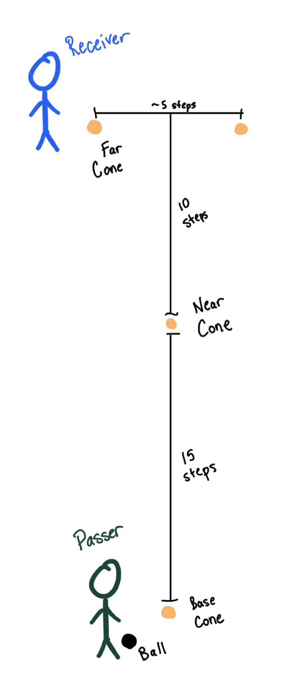

Set-Up

- Place a Base Cone for the passer.
- 15 steps forward from the passer, place the Near Cone.
- 10 steps further forward, place two Far Cones about 5 steps apart horizontally.
- Passer stands at the Base Cone with the ball. Receiver starts at the Far Left Cone.
Stage 1
Check, Receive, Open Up, and Play a Long Ball
1.5 minutes on the left, rotate with partner, then both do the right side
- Receiver checks from the Far Left Cone to the Near Cone, running onto the ball as it arrives.
- Receive on the back foot on the left side of the Near Cone, take a soft touch, and play it back with the same foot.
- Open up and swing wide of the Far Cone to create a new angle.
- Passer plays a long ball to the receiver's feet. Receiver takes a big first touch towards and around the Far Left Cone, then plays it back to the passer.
Stage 2
Check Away, Check Back, Turn, and Release
1.5 minutes on the left, rotate with partner, then both do the right side
- Receiver starts at the Near Cone and checks away to the Far Left Cone, dragging an imaginary defender with them.
- Receiver then checks back hard to the Near Cone to lose the defender.
- Receive the ball and take the first touch away from pressure, turning to face away from the imaginary defender.
- Open up and play a pass to the passer, who has made a run wide of the Far Cone.
Stage 3
Check, Shield, and Let the Ball Run
1.5 minutes on the left, rotate with partner, then both do the right side
- Receiver checks from the Far Left Cone to the Near Cone. Assume an imaginary defender is overplaying the right side.
- As soon as the receiver starts checking, the passer plays a medium-weight pass to the left of the passer, curving to the receiver's right foot.
- Rather than taking a normal touch, the receiver shields the imaginary defender and lets the ball run past them.
- Change direction quickly to chase the ball. Stay low and on the toes through the direction change.